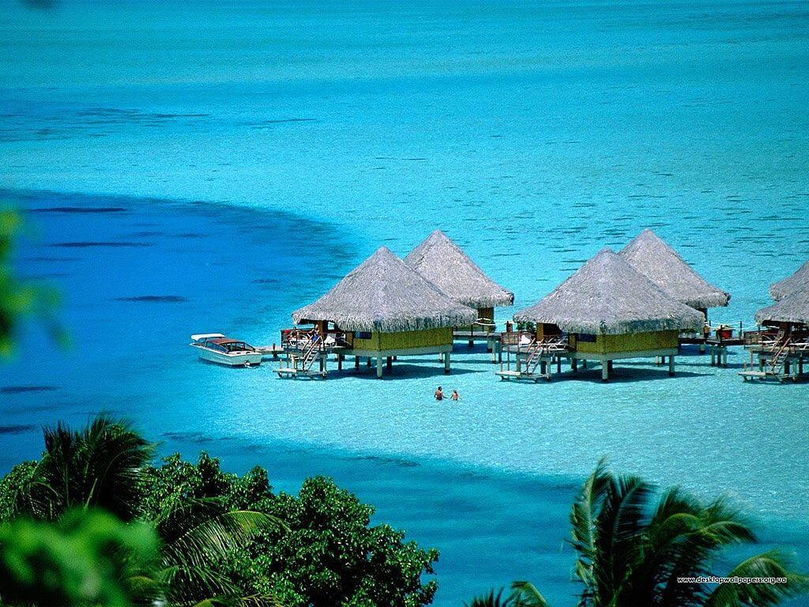
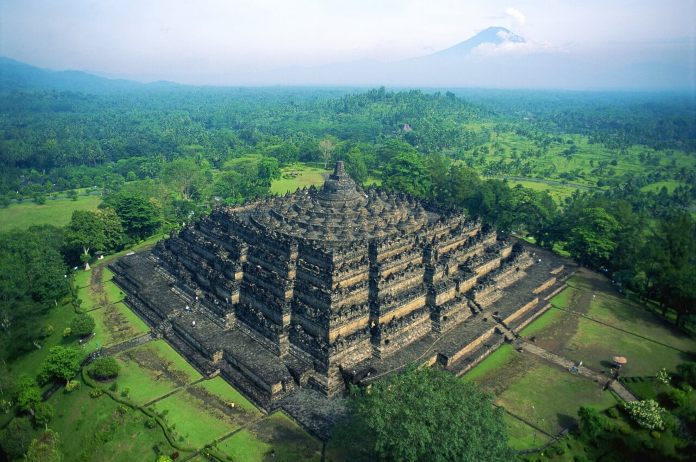
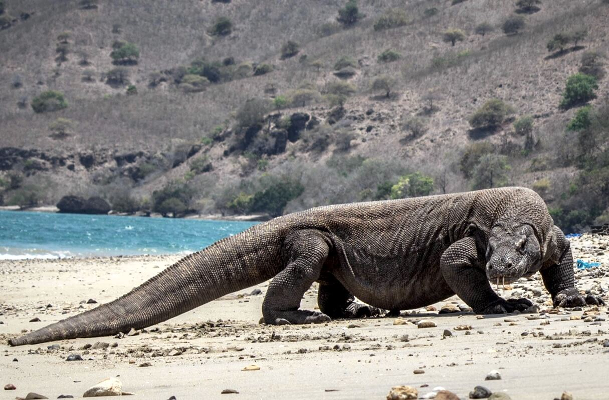
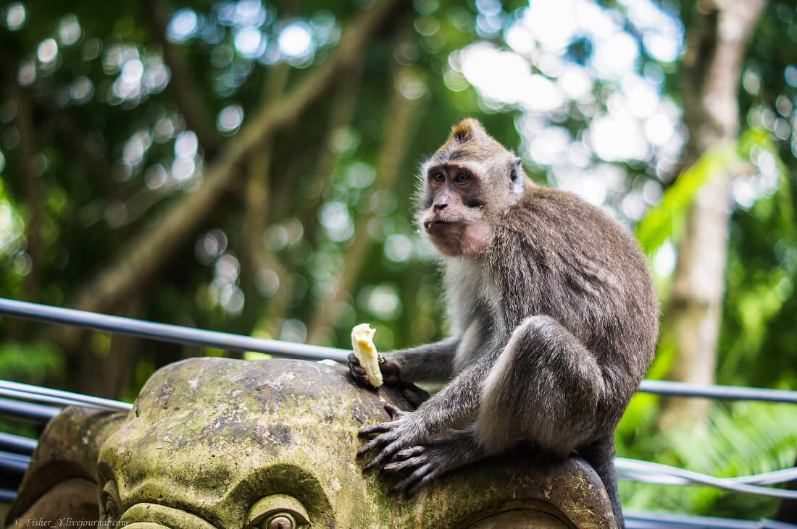
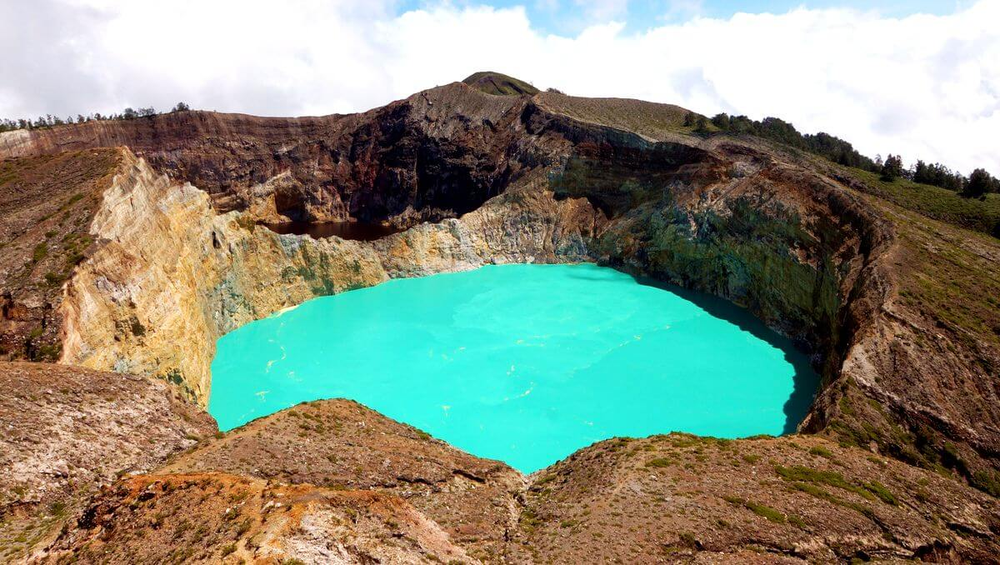

Індонезія
Індоне́зія офіційна назва — Респу́бліка Індоне́зія — країна в Океанії та Південно-Східній Азії. Населення, за офіційними даними на червень 2010 року, становить понад 237 500 000 осіб (за оціночними даними на липень 2011 року — понад 245 600 000 осіб), територія — 1 919 440 км², згідно з цими двома показниками є найбільшою країною регіону. Посідає четверте місце у світі за кількістю населення та п'ятнадцяте за територією. Столиця — Джакарта. Державна мова — індонезійська.
Острів Балі

Головною визначною пам'яткою країни є острів Балі, який у багатьох туристичних
проспектах називають «індонезійською перлиною». Балі - головна принада для іноземних
туристів і основна причина для поїздки в Індонезію. Острів ідеально підходить для відпочинку, оскільки тут є все - мальовнича природа, м'який клімат, чудові пляжі, чудові готелі і безліч цікавих пам'яток.
- Балі досить великий за своїми розмірами і розташований між островами Ломбок і
Ява. Тут близько 10 курортних центрів (Кута, Санур, Джимбаран і ін.), де можна підібрати
готель і чудово відпочити на місцевих пляжах. Любителі дайвінгу будуть просто в захваті
від чистої спокійної води і красивих підводних пейзажів.
- Туристам з дітьми обов'язково варто побувати в аквапарку Вотербум (Waterbom),
розташованому в районі Кути. Він являє собою гігантське аквамісто, розкидане на чотирьох
гектарах тропічних садів і числених атракціонів. Круті водні гірки, прозора труба, де
можна спуститися з висоти 6-поверхового будинку, мальовничі басейни, красива річка,
дитячі атракціони і живі ляльки у вигляді персонажів мультфільмів - все це дасть яскраві
відчуття і море радості всій вашій родині.
- Любителі екзотичної фауни можуть оглянути Парк рептилій або Парк птахів, де
можна побачити незвичайних представників тваринного світу Індонезії. А в Убуде є
спеціальний ліс, де можна побачити мавп різних видів. Забавні мавпочки абсолютно
нелякані і спокійно займаються своїми справами, що дозволяє туристам побачити чимало
цікавих і смішних сцен.
Обов'язково варто піднятися на згаслий вулкан Агунг. Висота його становить
3142 метра, і вершина гори є найвищою точкою на Балі. Зі схилів Агунга і з її вершини
відкривається фантастично красиве видовище на море і прилеглі околиці острова. На
західному схилі гори розташований храм Бесакіх, тому в дні релігійних свят туристам
тут не дозволяють підніматися на вершину.
Боробудур
Цей стародавній храм є одним з найвідоміших і культурно значущих пам'яток Індонезії. Боробудур був побудований у 8 столітті і побудований у формі традиційної буддійської мандали. Це об'єкт Всесвітньої спадщини ЮНЕСКО і вважається одним з найбільших буддійських місць у світі. Масивний храм був забутий протягом століть, коли вважається, що більша частина населення переселяється у східну Яву через вулканічні виверження. Але це було знову відкрито в 1800-х роках, і сьогодні це є одним з основних ринків Java. Відвідайте на сході сонця, щоб запалити світло факелом, піднятися на храм і насолодитися захоплюючим спостереженням, коли комплекс занурився під сонячне світло. Боробудур лежить поруч Джокьякарта, старе яванське місто, відоме своїми багатими культурно-історичними пропозиціями.
Національний парк Комодо
Хто не мріяв побачити дракона принаймні один раз у своєму житті? Komodos Індонезії не міфічні істоти, однак вони люті та смертоносні тварини. Національний парк Комодо, об'єкт Всесвітньої спадщини ЮНЕСКО, охоплює п'ять основних островів та ряд невеликих, а також навколишні морські райони. Води з цих островів є одними з найбагатших і найрізноманітніших у світі. Комодо-дракони - це зірки шоу на будь-якому відвіданні парку, але відвідувачі можуть також походи, трубки, катання на каное або відвідування маленьких сіл на островах. Відвідувачі повинні прибути на човні, а також вхідний збір, плюс додаткові витрати на перевезення, послуги гідів та інші види діяльності.
Священний мавповий ліс, Убуд
Убуд є культурним центром Балі, і саме тут ви знайдете Священний Ліс мавп, спокійний простір, де можна відчути давню велич острова. У цьому індуїстському храмі ви побачите безліч довгохвильових макак, вид мавпи, який часто зустрічається в Південно-Східній Азії. Храм також цікавий візит, тому що балійський індуїзм поєднує в собі аспекти кількох різних релігій, що робить його унікальним серед інших типів індуїзму, що практикуються сьогодні. Біля лісу Падангтегал, невелике селище, яке протягом багатьох років складало художників усіх сортів, а храм, артистизм та приголомшливий природний фон роблять поїздку до лісу та села обов'язковим на Балі.
Озеро Тоба
Інший природний чудеса Індонезії, озеро Тоба - це як водоймище, так і супер вулкан. Озеро, що сидить в кратері, сформувалося між 69000 і 77000 років тому і вважається результатом катастрофічного виверження. Це виверження, як вважають, є найбільшим на Землі за останні 25 мільйонів років. Згідно з теорією катастрофи вулкана Тоба деякі антропологи та археологи вважають, що воно мало глобальні наслідки, в результаті чого більшість людей які жили тоді загинуло й виникнув ефект пляшкового горла в Центральній і Східній Африці та Індії, й досі має вплив на генетичне різноманіття людства. Озеро становить 1145 квадратних кілометрів і глибину 450 метрів. Вулканічна активність все ще регулярно фіксується тут і штовхає деякі острови над водою. Озеро Тоба - вивчення краси та потужних сил на роботі на планеті. Тут ви можете піти на плавання, катання на водних лижах, катання на байдарках чи риболовлі, а також прогулянки по околицях пішки або на велосипеді.
Корисні посилання
- Іспанія
- Франція
- Канада
- Австралія
- Бразилія
- Аргентина
- Італія
- Індія
- ПАР
- Індонезія